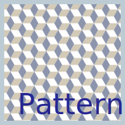

Using the image tag
Optimize and displaying images
Follow the instructions on the read-me file and place the optimized images in this page using the img tag.
Images with translucency
Flat-color graphics/illustrations
Photographs (continuous-tone images)
Cropping to specific pixel dimensions
Scalable vector graphics
